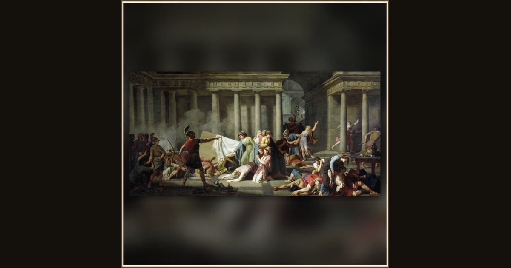

Ulysses, after Returning to His Palace and Slaying Penelope’s Suitors, Orders the Women to Remove the Bodies
Nicolas-André Monsiau · 1791 · Montreal Museum of Fine Arts · Montreal, Canada
After killing the suitors, Odysseus orders the disloyal women to remove the bodies. Monsiau mixed sand into the undercoat so the 1791 canvas would resemble an ancient wall painting. Explore its place in Book XXII of the Odyssey.